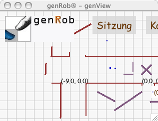
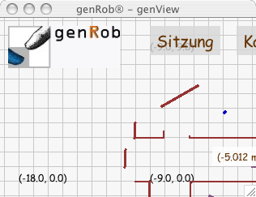
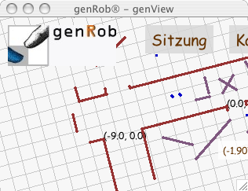
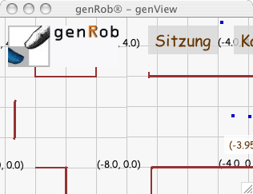

Hintergrund
Der Kartenhintergrund ist eine (fast) weiße Fläche mit Gitterlinien.
Die Gitterlinien mit den zusätzlich dargestellten Koordinaten
(xy-Paare in Meter)
werden für einen Ausschnitt aus der gesamten Karte dargestellt.
Die Parameter für diesen Ausschnitt sind dabei
die Koordinate des Ausschnittmittelpunkts,
die Auflösung und die Orientierung.
Die Bedienung des Kartenhintergrunds erfolgt mit Hilfe der Maus und unter
Zuhilfenahme der Tasten Shift (bekannt als Taste für die
Großbuchstaben bzw. die zweite Belegung der Tastatur)
oder Alt (Alternativ-Taste).

Bewegt man den Zeiger an eine beliebige Stelle über den Kartenhintergrund,
so werden dort die Koordinaten des berührten Punktes dargestellt
(ohne Bild).
Berührt (d.h. mit der Maus "klickt") man den Kartenhintergrund und "zieht",
so verschiebt sich der sichtbare Ausschnitt der Karte.
Während des Verschiebens ist im Zentrum des Kartenhintergrundes
in Rot die Position und die Orientierung des Mittelpunktes des
Kartenausschnittes dargestellt (ohne Bild).
Beim Verschieben ändert sich nur die Position (xy-Werte) des
Ausschnittmittelpunktes.
Die Werte sind in Meter.

Hält man die Shift-Taste und "zieht" gleichzeitig kreisförmig
in einiger Entfernung vom Zentrum um dasselbe, so wird
der Kartenausschnitt um dessen Mittelpunkt gedreht.
Während des Drehens ist im Zentrum des Kartenhintergrundes
in Rot die Position und die Orientierung des Mittelpunktes des
Kartenausschnittes dargestellt (ohne Bild).
Beim Drehen ändert sich nur die Orientierung des
Ausschnittmittelpunktes.
Dabei bedeutet 0°, daß die x-Achse nach rechts und die y-Achse
nach oben gehen.
Die Gradzahlen laufen mathematisch positiv oder anders ausgedrückt
entgegen dem Uhrzeiger.

Hält man die Alt-Taste und "zieht" gleichzeitig horizontal,
so verändert man die Auflösung der Kartendarstellung.
Während sich die Auflösung ändert, wird im Zentrum des Ausschnitts in Rot
das Auflösungsverhältnis angezeigt.

© 2002-2007
Hagen Stanek,
genRob®
genSite 2.1.2
|